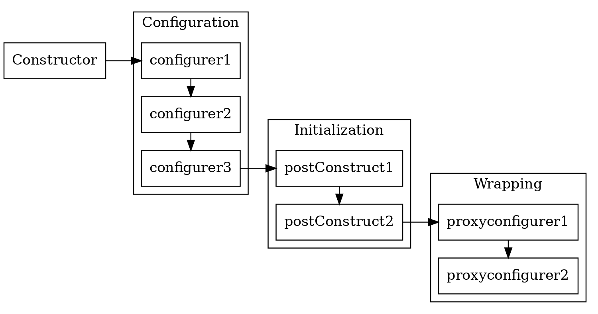
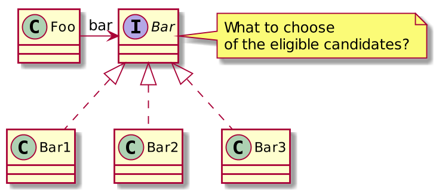
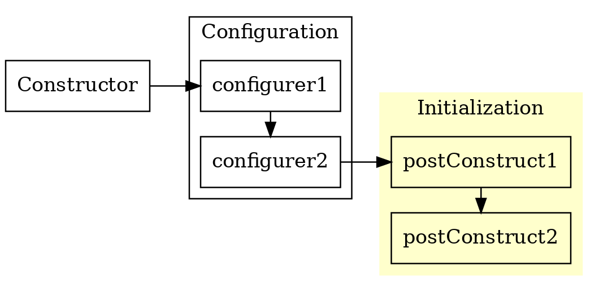
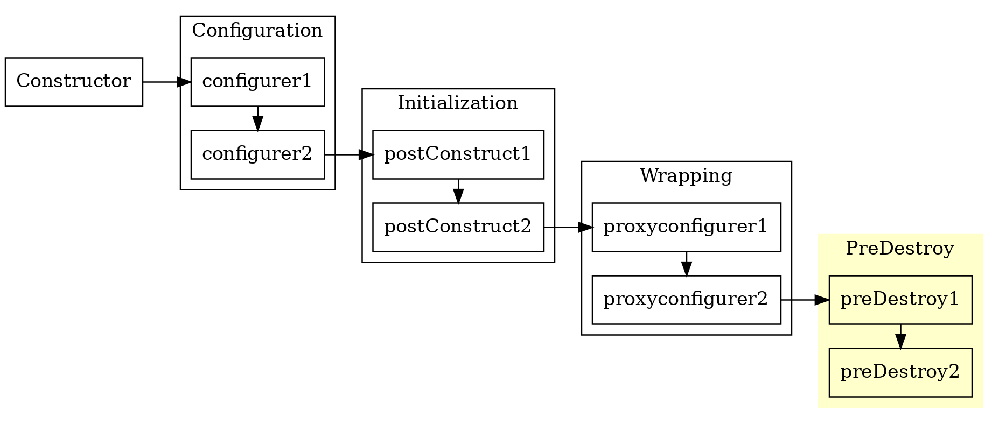
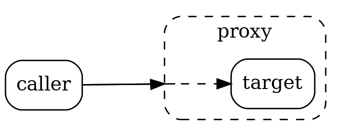
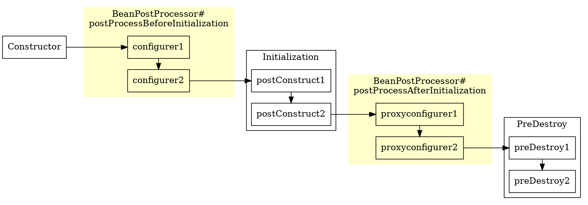
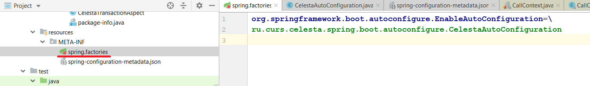
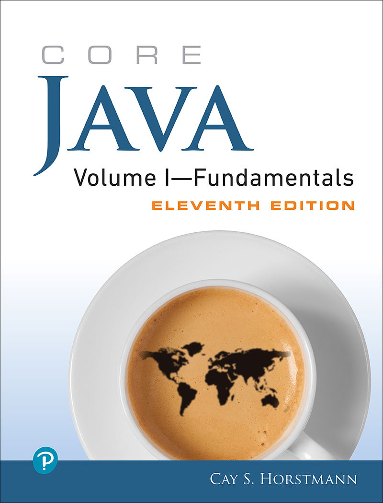
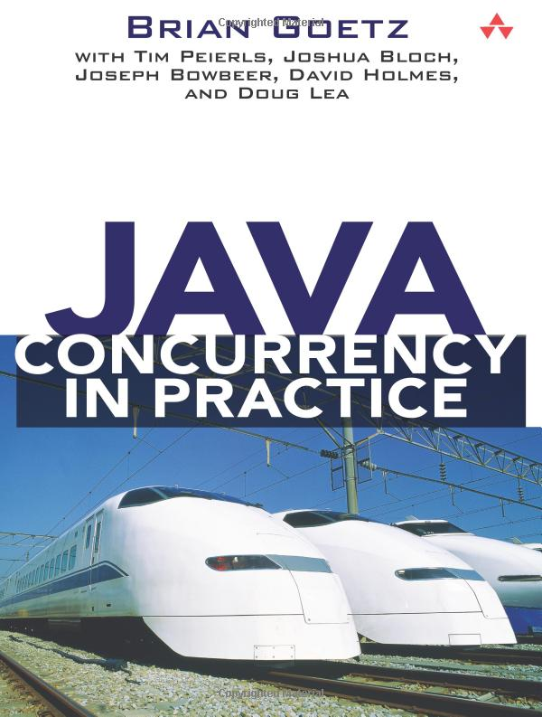
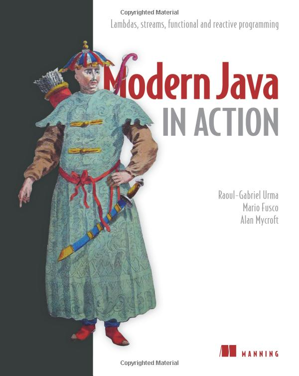

Core Java. Lecture #14
Spring AOP (ending). Spring Boot
@inponomarev
Bean life cycle (reminder)

Disambiguation

NoUniqueBeanDefinitionException: No qualifying bean of
type 'edu.phystech.robotlecturer.Bar' available: expected
single matching bean but found 3: bar1,bar2,bar3Binding by name (implicit)
@Component
public class Foo {
//Doesn't work... :-(
@Autowired
private Bar bar;
//It works!! :-)
@Autowired
private Bar bar1;
...
}Binding by name (explicit)
@Component
public class Foo {
@Autowired
@Qualifier("bar1")
private Bar bar;
...
}Mark one of the implementations as @Primary
@Component
@Primary
public class Bar1 implements Bar {...}
@Component
public class Foo {
//Bar1 is injected
@Autowired
private Bar bar;
...
}But this only works if only one of the beans is marked as @Primary, otherwise "NoUniqueBeanDefinitionException: more than one 'primary' bean found among candidates".
But more often we need everything at once!
@Component
public class Foo {
@Autowired
private List<Bar> bar;
//OR
@Autowired
private Map<String,Bar> bar;You can inject not only beans, but also something simpler
@Configuration
//Path to the customization file
@PropertySource("classpath:config.properties")
public class Config {
}
@Component
public class Foo {
@Value("${url}")
String url;
@Value("${password}")
String password;You can also use SpEL expressions, such as #{bar.url}.
Object Initialization

The constructor is not suitable as an initializing method!
Object Initialization
@PostConstructis a standard Java annotation that can be put before an initialization method.If you cannot edit the class to insert an annotation, then
@Bean(initMethod= "init")
Finalization

Finalization
Symmetrical to initialization — when the container shuts down.
When the application is terminated,
context.destroy()is called, which triggers the finalization mechanism.@PreDestroyis a standard Java annotation.If you cannot edit a class, then
@Bean(destroyMethod = "destroy")
Practical task
We want to implement tracing: before starting and after the completion of each method, its name and time stamp should be displayed in the log.
Let us have 500 classes of 5 methods
So, in 2500 places you need to copy some code:
Isn’t that a bit too much??
Will we forget any of the methods?
Mixing business logic and utility code?
Aspect-oriented programming to the rescue
Typical tasks:
Logging: each method call must be marked in the log!
Security: When calling each method, we need to check if we have the right to call!
Transaction management: open a transaction before starting the method, commit on successful completion, roll back on unsuccessful.
AOP helps to solve these problems without duplicating code within methods.
A large number of aspects have already been written.
AOP terminology
Joinpoint - a place in the code, in the execution of which we "interfere" (and begin to execute something of our own). In theory, it can correspond to method calls, class initialization, and object instantiation, but in Spring AOP it is always a method call.
Advice — code that is "injected" and executed in joinpoint.
Pointcut — a certain set of joinpoints. For example, "all methods that begin with the word get." Or: "all methods annotated with `@Benchmarked`". By linking pointcuts to advices, we determine what will work and when.
AOP terminology
Aspect — a combination of advices and pointcuts, defined as a separate class. Defines the logic to add to your app that is responsible for a specific task (such as tracing).
Weaving is the process of "weaving" the advices code into the right places in the application code.
Target — A method whose behavior is changed using AOP.
How can AOP be implemented?
Static: weaving at the source or bytecode level.
Dynamically: creating a proxy and weaving during the runtime.
Spring uses dynamic AOP.
Question: What are the advantages and disadvantages of both methods?
Proxy Object: Implementation

Created as needed.
Intercepts calls to all methods on target.
Checks if the pointcut has not worked — and invokes advice.
Using AOP in Spring
To activate a BeanPostProcessor that scans AOP annotations, you need to include the @EnableAspectJAutoProxy annotation in the configuration
@Configuration
@EnableAspectJAutoProxy
public class AppConfig{
...
}(what is BeanPostProcessor — we’ll see later, but you already guess it’s an object configurator)
Example of an aspect
@Component @Aspect
public class BenchmarkAspect {
@Around("@annotation(Benchmark)")
//pointcut expression ^^^
public Object execEntryPoint(ProceedingJoinPoint joinPoint)
throws Throwable {
System.out.printf("[[[BENCHMARK method %s%n",
joinPoint.getSignature().getName());
long start = System.nanoTime();
Object retVal = joinPoint.proceed();
long end = System.nanoTime();
System.out.printf("Time: %dns]]]%n", end - start);
return retVal;
}
}Spring AOP checklist
@EnableAspectJAutoProxyover the configuration.@Aspectover the aspect.@Component/@Beanfor the aspect, and the aspect itself must be included in the application configuration.The aspect does not intercept methods that are called by the
@PostConstruct. Question: Why?
Spring AOP checklist
@EnableAspectJAutoProxyover the configuration.@Aspectover the aspect.@Component/@Beanfor the aspect, and the aspect itself must be included in the application configuration.The aspect does not intercept methods that are called by the
@PostConstruct.
Example of an aspect
@Component @Aspect
public class BenchmarkAspect {
@Around("@annotation(Benchmark)")
//pointcut expression ^^^
public Object execEntryPoint(ProceedingJoinPoint joinPoint)
throws Throwable {
System.out.printf("[[[BENCHMARK method %s%n",
joinPoint.getSignature().getName());
long start = System.nanoTime();
Object retVal = joinPoint.proceed();
long end = System.nanoTime();
System.out.printf("Time: %dns]]]%n", end - start);
return retVal;
}
}What kinds of the advices are there
@Before@AfterReturning(normal completion)@AfterThrowing(exception)@After(normal completion and exception)@Around
@Before
@Before("@annotation(Benchmark)")
public void beforeFooMethods(JoinPoint jp) {
String methodName = jp.getSignature().getName();
System.out.println(methodName);
}@After
@AfterReturning(pointcut= "execution(* edu.phystech..*.foo())",
returning = "retVal")
public void afterFoo(Double retVal) {
System.out.println("AFTER foo()" + retVal);
}
@AfterThrowing(
pointcut= "execution(* aop.example.application..*.*(..))",
throwing = "ex")
public void dbException(DatabaseRuntimeException ex){
System.out.println(ex);
}BeanPostProcessor interface
public interface BeanPostProcessor {
//inject values into bean
default Object postProcessBeforeInitialization(
Object bean, String beanName) throws BeansException {
return bean;
}
//return the the bean's wrapper
default Object postProcessAfterInitialization(
Object bean, String beanName) throws BeansException {
return bean;
}
}BeanPostProcessor

Own BeanPostProcessor
@Component public class InjectRandomIntAnnotationBeanPostProcessor
implements BeanPostProcessor {
@Override public Object postProcessBeforeInitialization(
Object bean, String beanName) throws BeansException {
for (Field f : ReflectionUtils.getAllFields(bean.getClass())) {
InjectRandomInt ann = f.getAnnotation(InjectRandomInt.class);
if (ann != null) {
int value = ThreadLocalRandom.current()
.nextInt(ann.min(), ann.max() + 1);
f.setAccessible(true);
try { f.set(bean, value); }
catch (IllegalAccessException e) {
throw new NotWritablePropertyException(
bean.getClass(), f.getName()); }
} }
return bean;
} }Demo
AnnotationConfigApplicationContext
DI
AOP
BeanPostProcessor
Test with ContextConfiguration
Spring Boot
Spring Boot
Convention over configuration
Connection of ready-made configured modules via "starters"
Including built-in Tomcat or Jetty (which inverted the old model)
Metrics, health checks, application configuration via configuration file
Everything is annotations-based
Dependency Management
<parent>
<groupId>org.springframework.boot</groupId>
<artifactId>spring-boot-starter-parent</artifactId>
<!-- ...to spring-boot-dependencies, 3356 LOC -->
<version>2.2.1.RELEASE</version>
</parent>Connect the starters
<!-- «We want a web service»-->
<dependency>
<groupId>org.springframework.boot</groupId>
<artifactId>spring-boot-starter-web</artifactId>
<!-- And why don't we specify the version?-->
</dependency>Writing Main class
//We do not specify packages for scanning
@SpringBootApplication
public class Main {
public static void main(String[] args) throws SQLException, IOException {
/*run method returns ApplicationContext,
but we don't need it:-)*/
SpringApplication.run(Main.class, args);
}
}Writing a controller
//It's also a @Controller, and hence it's a bean
@RestController
public class HelloController {
@GetMapping("/hello")
public String sayHello(@RequestParam("name") String name) {
return String.format("Hello, %s!", name);
}
}Spring-boot-maven-plugin is responsible for building the jar file
<plugin>
<groupId>org.springframework.boot</groupId>
<artifactId>spring-boot-maven-plugin</artifactId>
</plugin>It turns out to be a "fat" executable jar.
You can make it literally executable.
How does Spring Boot Starter finds its beans?
Spring Boot scans the ClassPath file system for
spring.factoriesfiles.

Demo
Spring Boot
Spring JDBC Template
Spring Boot Test
It’s time to round off :-)
Everything I’ve covered in this course is legacy already.
We worked on Java 17 (LTS), but…
March 2022 — Java 18,
September 2022 — Java 19,
March 2023 — Java 20,
September 2023 — Java 21 (next LTS).
Java syntax is evolving
Modularization (Java 9+)
Type Inference (Java 10+)
Switch Expressions (Java 12+)
Multiline Strings (Java 13+)
Records (Java 14+)
Everyone is waiting for projects
Valhalla
Loom
"Java Universe" is expanding at the speed of light
Not only Spring:
Microframeworks — for serverless
Not only Java language:
Groovy
Kotlin
Scala
Conclusions — parting words
Never stop learning new things
"Here, you see, it takes all the running you can do, to keep in the same place. If you want to get somewhere else, you must run at least twice as fast as that!”
The old is also useful to learn
 |  |  |  |
Remember about your professional responsibility
The fate of people depends on the work of programmers in the XXI century
Even if it is not a program that controls an airplane or lung ventilator
Remember about:
Security
Privacy
Accessibility
Make the world a better place!
Become a part of the community!
JUGs: Moscow, St. Petersburg, Novosibirsk.
Conferences: Joker, JPoint, SnowOne.
When it’s all over, come to moscow’s JUG!
Welcome to the Java universe :-)